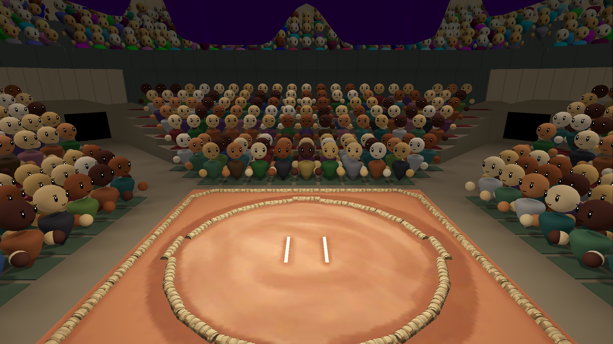
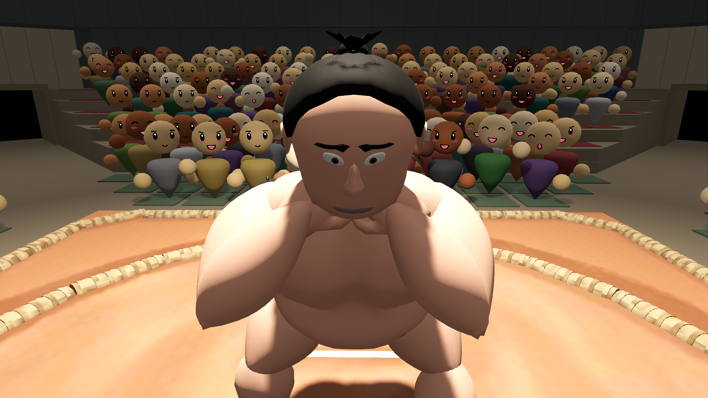
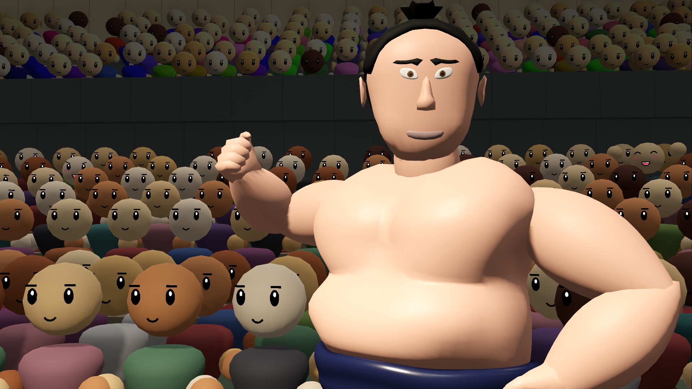
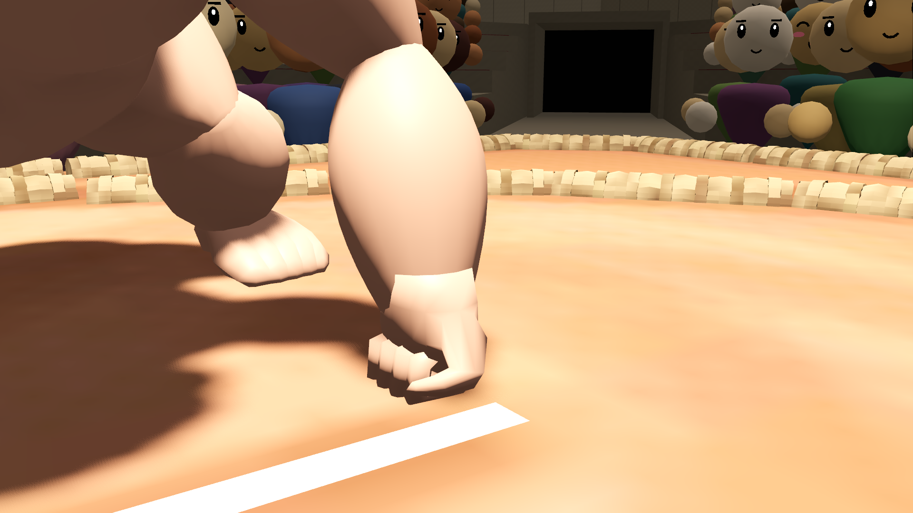

Description
Heya! Sumo Manager is a management game about running a sumo stable, in the tradition of long-form sports management sims.
You are the new oyakata. The old master has retired, his staff have moved on, and what is left is an aging Juryo wrestler, four young hopefuls and a heya that still has to pay its bills. Every day you decide how your rikishi train and how hard, what they eat, who you hire, what you build, which boys you try to recruit, and how you keep the supporters who fund you happy.
Then the basho comes round. Six tournaments a year, fifteen days each, and after every one the banzuke is rebuilt from the results. A winning record moves a man up; a losing one sends him down. Every bout is settled by a rules engine that weighs strength, technique, speed, weight, fighting style and the plan you gave him, and you can go down to the dohyo and watch any bout fought out in 3D.
The rest of the sumo world doesn't wait for you. Forty rival stables chase the same recruits, wrestlers get hurt, slump, peak and retire, and the news feed and history book keep track of who is rising and which records are under threat.
Short description (for listings)
Heya! Sumo Manager is a sumo stable management sim. Take over a heya whose old master has retired, train and feed your rikishi, keep the supporters paying, and climb the banzuke one fifteen-day basho at a time.
Features
- Run the whole heya. Training, diet, staff, facilities, scouting, supporters and money, each with its own screen and its own trade-offs.
- The real sumo year. Six honbasho, six divisions from Jonokuchi to Makuuchi, and a banzuke rebuilt after every tournament from what everyone did in it.
- Every official kimarite. All 82 winning techniques, plus the rare non-technique finishes.
- Watch any bout in 3D. Procedurally animated wrestlers, pre-bout rituals including the salt throw, and over 390 lines of commentary.
- A world that moves without you. 40 rival stables, more than 160 events and storylines, 32 kinds of injury, a daily news feed and a record book of champions.
- Wrestlers from around the sumo world. Japan, Mongolia, Hawaii, Georgia, Brazil, Bulgaria, Estonia, Kazakhstan and Ukraine.
- Sumo on its own terms. Real terminology throughout, with an in-game glossary for newcomers.
- Free demo. Play your first four basho on Steam.
History
Development started in late 2025. The game is built in Godot by Houseman Games, a solo developer. A free demo covering the first four basho of a career launched on Steam in October 2026, and it will be featured in Steam Next Fest in October 2026.
A paragraph in your own words: why sumo, why a management game, and what you want players to feel.
Videos

Images
All images are 1920×1080 captures from the game. Click for full size.








Logo & icon


Credits
| Design, code and art | Houseman Games your name, if you want it public |
| Playtesters | Justin House, Tom Payne, Samuel Clark, Lewis Jones, Jody Ayers |
| Music | “Amenoshita3” by PeriTune (CC BY 4.0) |
The full list of third-party assets and licences is on the in-game Credits screen.
Contact
For press enquiries, review keys and interviews: press@yoursite.com